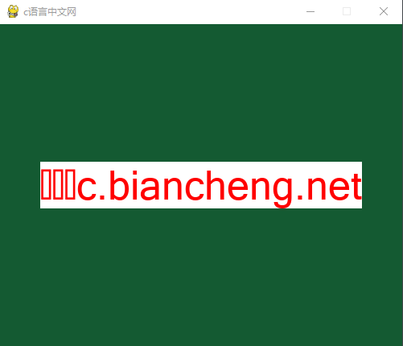
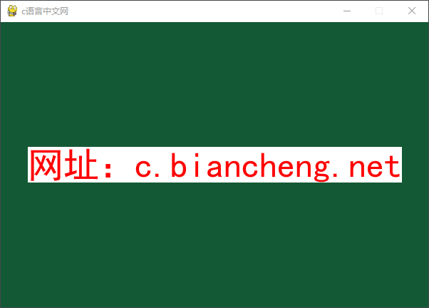
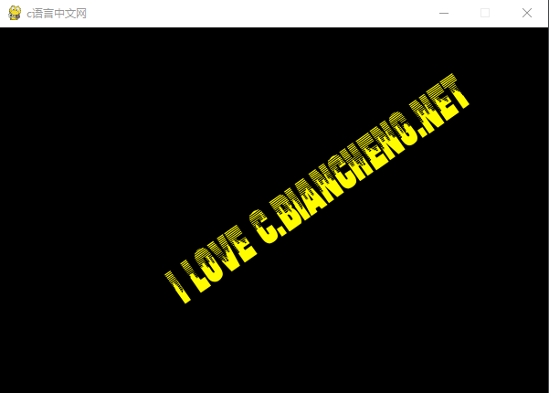

Pygame Font文本和字体（含示例）
文本是任何一款游戏中不可或缺的重要要素之一，Pygame 通过
Font 模块提供了两种创建字体（Font）对象的方法，分别是：
下面对这两种方法分分别进行介绍：
使用示例如下：
注意，如果要显示中文，那么一定要使用中文字体文件，比如“方正粗黑宋简体”，否则会出现文字乱码的现象（编程帮三个字无法显示）。如下所示：
使用示例如下：
使用上述方法，我们可以非常方便地对字体进行渲染，或者获取字体的相关信息，比如字体的高度、是否是粗体、斜体等信息。
上述方法中使用最多要数第一个方法，它是绘制文本内容的关键方法，其语法格式如下：
下面看一组简单的示例：
程序运行结果如下所示：
除了使用上述方法之外，Pygame 为了增强字体模块的功能，在新的版本中又加入了另外一个字体模块，它就是 Freetype 模块。该模块属于 Pygame 的高级模块， 它能够完全可以取代 Font 模块，并且在 Font 模块的基础上又添加了许多新功能，比如调整字符间距离，字体垂直模式以及逆时针旋转文本等（详情可阅读官方文档）。
如果想 Freetype 模块，必须使用以下方式导包：
pygame.font模块来创建一个字体对象，从而实现绘制文本的目的。该模块的常用方法如下所示：| 方法 | 说明 |
|---|---|
| pygame.font.init() | 初始化字体模块 |
| pygame.font.quit() | 取消初始化字体模块 |
| pygame.font.get_init() | 检查字体模块是否被初始化，返回一个布尔值。 |
| pygame.font.get_default_font() | 获得默认字体的文件名。返回系统中字体的文件名 |
| pygame.font.get_fonts() | 获取所有可使用的字体，返回值是所有可用的字体列表 |
| pygame.font.match_font() | 从系统的字体库中匹配字体文件，返回值是完整的字体文件路径 |
| pygame.font.SysFont() | 从系统的字体库中创建一个 Font 对象 |
| pygame.font.Font() | 从一个字体文件创建一个 Font 对象 |
Font 模块提供了两种创建字体（Font）对象的方法，分别是：
- SysFont（从系统中加载字体文件创建字体对象）
- Font（通过文件路径创建字体对象）
下面对这两种方法分分别进行介绍：
1) font.SysFont()
直接从系统中加载字体使用如下方法：pygame.font.SysFont(name, size, bold=False, italic=False)name：列表参数值，表示要从系统中加载的字体名称，它会按照列表中的元素顺序依次搜索，如果系统中没有列表中的字体，将使用 Pygame 默认的字体。
- size：表示字体的大小；
- bold：字体是否加粗；
- italic：字体是否为斜体。
使用示例如下：
print("获取系统中所有可用字体",pygame.font.get_fonts())
my_font = pygame.font.SysFont(['方正粗黑宋简体','microsoftsansserif'],50)
上述方法将优先使用“方正粗黑宋简体”。注意，如果要显示中文，那么一定要使用中文字体文件，比如“方正粗黑宋简体”，否则会出现文字乱码的现象（编程帮三个字无法显示）。如下所示：

图1：显示中文乱码
图1：显示中文乱码
2) font.Font()
当我们想要在游戏中引入比较炫酷的字体，而系统中又不存在时，我们可以使用另外一种方法，从外部加载字体文件来绘制文本。其语法格式如下：my_font = pygame.font.Font(filename, size)参数说明如下：
- filename：字符串格式，表示字体文件的所在路径；
- size：设置字体的大小。
使用示例如下：
f = pygame.font.Font('C:/Users/Administrator/Desktop/willhar_.ttf',50)
从桌面加载了一个字体文件来创建字体对象，并设置字体大小为 50。注意，上述字体文件是在网上下载的，您也可以任意下载（点击网址前往），或者使用系统库中的字体文件。3) 字体对象方法
Pygame 为处理字体对象提供了一些常用方法，如下所示：| 方法 | 说明 |
|---|---|
| pygame.font.Font.render() | 该函数创建一个渲染了文本的 Surface 对象 |
| pygame.font.Font.size() | 该函数返回渲染文本所需的尺寸大小，返回值是一个一元组 (width,height) |
| pygame.font.Font.set_underline() | 是否为文本内容绘制下划线 |
| pygame.font.Font.get_underline() | 检查文本是否绘制了下划线 |
| pygame.font.Font.set_bold() | 启动粗体字渲染 |
| pygame.font.Font.get_bold() | 检查文本是否使用粗体渲染 |
| pygame.font.Font.set_italic() | 启动斜体字渲染 |
| pygame.font.Font.metrics() | 获取字符串中每一个字符的详细参数 |
| pygame.font.Font.get_italic() | 检查文本是否使用斜体渲染 |
| pygame.font.Font.get_linesize() | 获取字体文本的行高 |
| pygame.font.Font.get_height() | 获取字体的高度 |
| pygame.font.Font.get_ascent() | 获取字体顶端到基准线的距离 |
| pygame.font.Font.get_descent() | 获取字体底端到基准线的距离 |
使用上述方法，我们可以非常方便地对字体进行渲染，或者获取字体的相关信息，比如字体的高度、是否是粗体、斜体等信息。
上述方法中使用最多要数第一个方法，它是绘制文本内容的关键方法，其语法格式如下：
render(text, antialias, color, background=None)参数说明如下所示：
- text：要绘制的文本内容
- antialias：布尔值参数，是否是平滑字体（抗锯齿）。
- color：设置字体颜色；
- background：可选参数，默认为 None，该参数用来设置字体的背景颜色。
下面看一组简单的示例：
import sys
import pygame
# 初始化
pygame.init()
screen = pygame.display.set_mode((600,400))
#填充主窗口的背景颜色
screen.fill((20,90,50))
#设置窗口标题
pygame.display.set_caption('c语言中文网')
# 字体文件路径 C:/Windows/Fonts/simhei.ttf
f = pygame.font.Font('C:/Windows/Fonts/simhei.ttf',50)
# render(text, antialias, color, background=None) -> Surface
text = f.render("网址：c.biancheng.net",True,(255,0,0),(255,255,255))
#获得显示对象的 rect区域大小
textRect =text.get_rect()
#设置显示对象居中
textRect.center = (300,200)
screen.blit(text,textRect)
while True:
# 循环获取事件，监听事件
for event in pygame.event.get():
# 判断用户是否点了关闭按钮
if event.type == pygame.QUIT:
#卸载所有pygame模块
pygame.quit()
#终止程序
sys.exit()
pygame.display.flip() #更新屏幕内容
程序运行结果如下所示：

图2：显示文本内容
图2：显示文本内容
除了使用上述方法之外，Pygame 为了增强字体模块的功能，在新的版本中又加入了另外一个字体模块，它就是 Freetype 模块。该模块属于 Pygame 的高级模块， 它能够完全可以取代 Font 模块，并且在 Font 模块的基础上又添加了许多新功能，比如调整字符间距离，字体垂直模式以及逆时针旋转文本等（详情可阅读官方文档）。
如果想 Freetype 模块，必须使用以下方式导包：
import pygame.freetype下面使用 Freetype 模块来绘制文本内容，代码如下：
import sys,pygame
import pygame.freetype
pygame.init()
# 设置位置变量
pos=[180,50]
# 设置颜色变量
GOLD=255,251,0
BLACK=0,0,0
screen=pygame.display.set_mode((600,400))
pygame.display.set_caption("c语言中文网")
f1=pygame.freetype.Font("C:/Users/Administrator/Desktop/willhar_.ttf",45)
# 注意，这里使用render_to() 来绘制文本内容，与render 相比，该方法无返回值
# 参数说明：
# pos 绘制文本开始的位置，fgcolor表示前景色，bgcolor表示背景色，rotation表示文本旋转的角度
freeRect = f1.render_to(screen, pos,"I love c.biancheng.net",fgcolor = GOLD,bgcolor = BLACK, rotation=35)
while True:
for event in pygame.event.get():
if event.type == pygame.QUIT:
sys.exit()
pygame.display.update()
程序运行结果如下：

图3：绘制文本内容
图3：绘制文本内容
关注公众号「站长严长生」，在手机上阅读所有教程，随时随地都能学习。内含一款搜索神器，免费下载全网书籍和视频。

微信扫码关注公众号